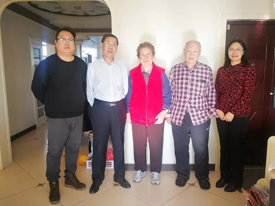

本着对历史负责的精神，农工党赤峰市委会召开会议研究决定对农工党赤峰市党史进行整理后，农工党赤峰市委会副主委陈文武带领党史整理小组迅速启动了口述党史征集工作。目前，口述党史部分已经基本完成。


农工党党史整理工作分为口述党史和党史文字工作两部分。本项工作自开展以来，对13位在组织发展、参政议政、社会服务或本职工作中做出突出贡献的老同志进行了采访。通过他们对亲历、亲闻、亲见的大小事件的细致入微地回忆讲述，以及提供的文字材料、照片等珍贵资料，共录制了27小时音频资料，征集文字材料8份约4万字、图片20张，为记录农工党在赤峰地区发展提供了宝贵的资料，这些材料本身也是开展“不忘使用初心，继续携手前进”主题教育活动最鲜活的教材。